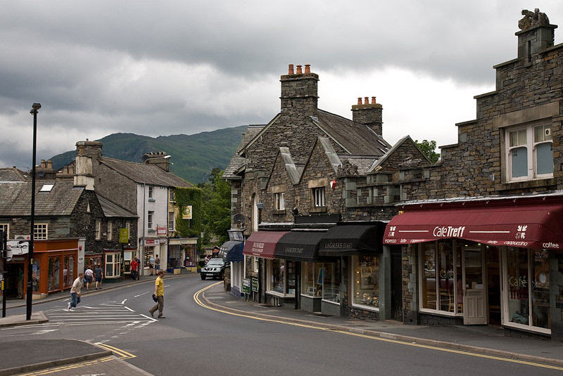
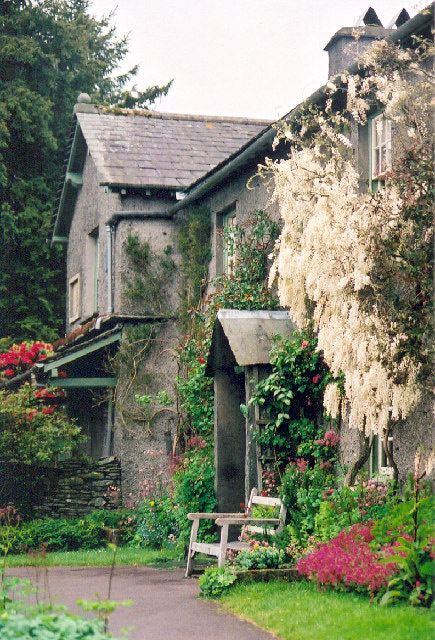

Ambleside
By Diliff - Own work, CC BY-SA 3.0, https://commons.wikimedia.org/w/index.php?curid=8316653
Hill Top - Home of Beatrix Potter
By Marion Dutcher, CC BY-SA 2.0, https://commons.wikimedia.org/w/index.php?curid=9162044
By Diliff - Own work, CC BY-SA 3.0, https://commons.wikimedia.org/w/index.php?curid=8316653
By Marion Dutcher, CC BY-SA 2.0, https://commons.wikimedia.org/w/index.php?curid=9162044